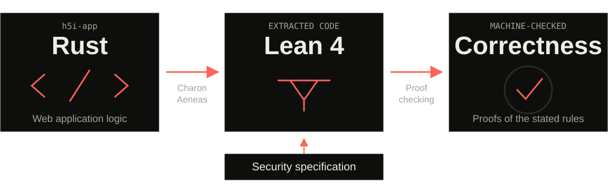

Find Bugs ∃
Uncover whether vulnerabilities exist.
Find bugs.
Prove correctness.
A lesson from my PhD: we need both.
Uncover whether vulnerabilities exist.
Prove the security rules hold for all inputs.
Test existing web apps in any language.
Prove application correctness in Lean 4.

Example: only an author or moderator can delete a post.
See the proof ↗NEXT